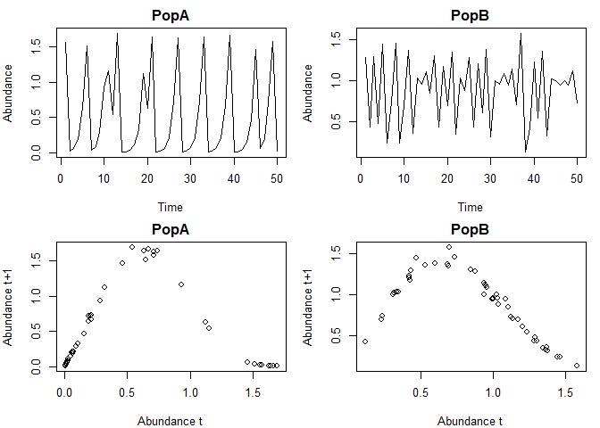
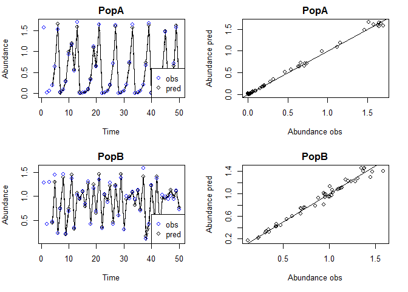
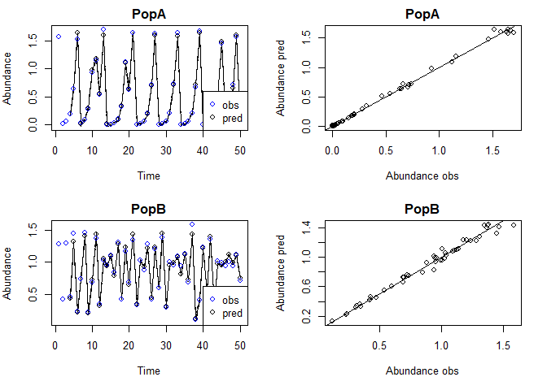
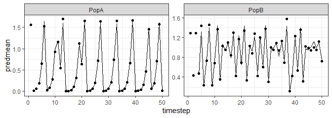
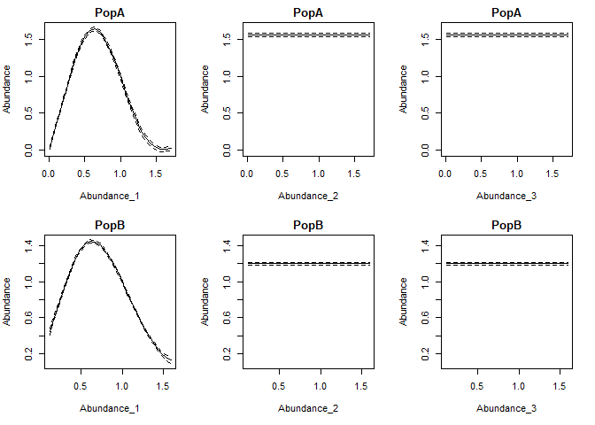
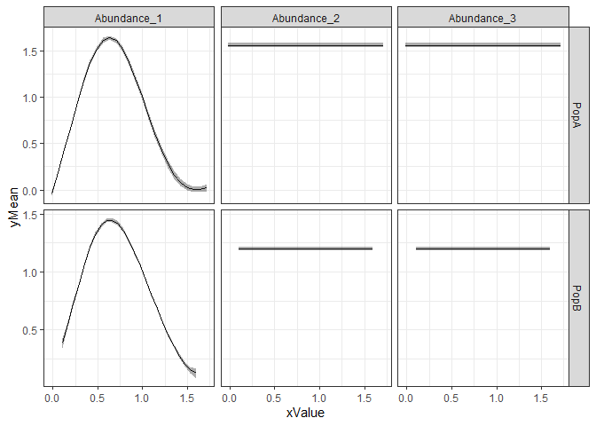
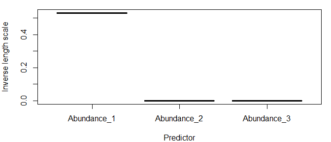
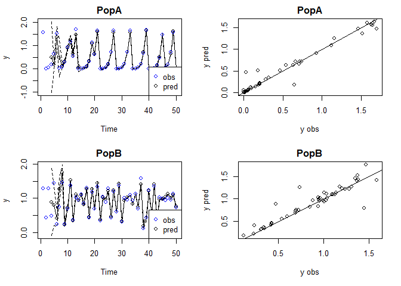
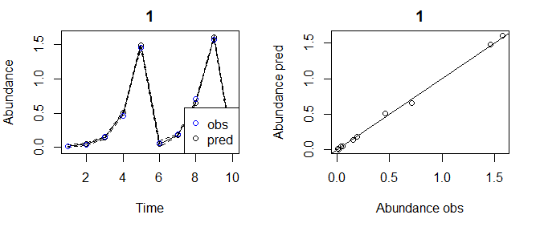
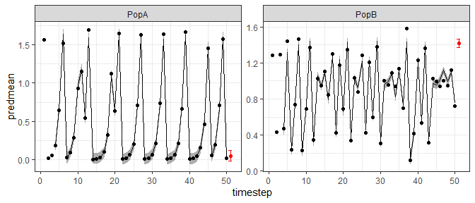

Disclaimer: This is very much a work in progress. Use at your own risk and please report any problems.
This is version 0.0.0.9006
This package contains functions for fiting hierarchical, separable length scale Gaussian process (GP) models with automatic relevance determination (ARD) for use in Empirical Dynamic Modeling (EDM) and other applications. This is an adaptation of code originally developed by Stephan Munch in MATLAB.
The main function is fitGP which is used to train the model and can also produce predictions if desired. Use summary.GP to view a summary, predict.GP to generate other or additional predictions from a fitted model, plot.GPpred to plot observed and predicted values and getconditionals to obtain conditional reponses. Also available for use are the functions makelags which can be used to create delay vectors, and getR2 for getting R2 values. See the Specifying training data and the vignettes for more detailed instructions.
Installation
To install the package:
install.packages("devtools") #if required
devtools::install_github("tanyalrogers/GPEDM")If you are using Windows, you may need to install Rtools, which allows you to complile the C++ code.
Basic Use
Here are some simulated data from 2 populations with theta logistic dynamics. The data contain some small lognormal process noise, and the populations have different theta values.
library(GPEDM)
data("thetalog2pop")
pA=subset(thetalog2pop,Population=="PopA")
pB=subset(thetalog2pop,Population=="PopB")
N=nrow(pA)
par(mfrow=c(2,2),mar=c(4,4,2,1))
plot(Abundance~Time,data=pA,type="l",main="PopA")
plot(Abundance~Time,data=pB,type="l",main="PopB")
plot(pA$Abundance[1:(N-1)],pA$Abundance[2:N],
xlab="Abundance t",ylab="Abundance t+1",main="PopA")
plot(pB$Abundance[1:(N-1)],pB$Abundance[2:N],
xlab="Abundance t",ylab="Abundance t+1",main="PopB")
Here is how you might set up a hierarchical time-delay embedding model. In this example, Abundance is the response variable (y). We will use an embedding dimension (E) of 3 and time delay (tau) of 1. Population indicates which population the data are from, so it is included under pop. Since the data are on somewhat different scales and don’t necessarily represent the same ‘units’, we will use local (within population) data scaling, as opposed to global. Just for fun, we will also request leave-one-out predictions.
tlogtest=fitGP(data = thetalog2pop, y = "Abundance", pop = "Population", E=3, tau=1,
scaling = "local", predictmethod = "loo")
summary(tlogtest)
#> Number of predictors: 3
#> Length scale parameters:
#> predictor posteriormode
#> phi1 Abundance_1 0.529
#> phi2 Abundance_2 0.000
#> phi3 Abundance_3 0.000
#> Process variance (ve): 0.01221358
#> Pointwise prior variance (sigma2): 2.53986
#> Number of populations: 2
#> Dynamic correlation (rho): 0.3250464
#> In-sample R-squared: 0.9933951
#> In-sample R-squared by population:
#> R2
#> PopA 0.9970774
#> PopB 0.9815181
#> Out-of-sample R-squared: 0.991239
#> Out-of-sample R-squared by population:
#> R2
#> PopA 0.9961232
#> PopB 0.9754852From the summary, we can see that ARD has (unsurprisingly) deemed lags 2 and 3 to be unimportant (length scales are 0), so E=1 is probably sufficient. The dynamic correlation (rho) tells us the degree to which the dynamics are correlated (they are are rather dissimilar in this case). Since the simulated data don’t contain that much noise, the R-squared values are quite high.
Plot observed and predicted values
The observed and predicted values can be found under model$insampresults or model$outsampresults.
We can make a quick plot of the observed and predicted values using plot. Standard error bands are included in the time series plots, although they’re a little hard to see in this example.
plot(tlogtest)
#> Plotting out of sample results.
To get the in-sample predictions:
plot(tlogtest, plotinsamp = T)
#> Plotting in sample results.
If you prefer ggplot:
library(ggplot2)
ggplot(tlogtest$insampresults,aes(x=timestep,y=predmean)) +
facet_wrap(pop~., scales = "free") +
geom_line() + geom_ribbon(aes(ymin=predmean-predfsd,ymax=predmean+predfsd), alpha=0.4) +
geom_point(aes(y=obs)) +
theme_bw()
#> Warning: Removed 3 rows containing missing values (geom_path).
Plot conditional responses
The function getconditionals will compute and plot conditional responses to each input variable (other input varibles set to their mean value). From this we can also clearly see that lags 2 and 3 have no impact, and we can see how the lag 1 dynamics of the 2 populations differ.
con=getconditionals(tlogtest)
If you prefer ggplot:
#have to convert conditionals output to long format
#there may be a more concise way to do this
library(tidyr)
npreds=length(grep("_yMean",colnames(con)))
conlong1=gather(con[,1:(npreds+1)],x,xValue,2:(npreds+1))
conlong2=gather(con[,c(1,(npreds+2):(2*npreds+1))],ym,yMean,2:(npreds+1))
conlong3=gather(con[,c(1,(2*npreds+2):(3*npreds+1))],ys,ySD,2:(npreds+1))
conlong=cbind.data.frame(conlong1,yMean=conlong2$yMean,ySD=conlong3$ySD)
ggplot(conlong,aes(x=xValue,y=yMean)) +
facet_grid(pop~x, scales = "free") +
geom_line() + geom_ribbon(aes(ymin=yMean-ySD,ymax=yMean+ySD), alpha=0.4) +
theme_bw()
Plot inverse length scales
The model hyperparameters are located under model$pars. If you have n predictors, the first n values of pars will be the length scales. Note that if you use E and tau, the names of the predictors in the input data frame will be stored under model$inputs$x_names, and the names of the lagged predictors corresponding to the inverse length scales will be stored under model$inputs$x_names2.
predvars=tlogtest$inputs$x_names2
npreds=length(predvars)
lscales=tlogtest$pars[1:npreds]
par(mar=c(4,4,1,1))
plot(factor(predvars),lscales,xlab="Predictor",ylab="Inverse length scale")
Other types of predictions
We can use the predict function to get various types of predictions from a fitted model. Leave-one-out, predictmethod = "loo" is one option (above, we got these predictions at the same time we fit the model, but this is not necessary). The following obtains sequential (leave-future-out) predictions using the training data.
#sequential predictions (they should improve over time)
seqpred=predict(tlogtest,predictmethod = "sequential")
plot(seqpred)
#> Plotting out of sample results.
You could, alternatively, supply new data for which to make predictions. In that case, you would supply a new data frame (newdata). In our example, this data frame which should contain columns Abundance and Population.
A common approach when fitting these models is to split the available data into a training and test dataset. For instance, say we wanted a single-population model for PopA with 2 time lags, and we wanted to use the first 40 data points as training data, and the last 10 points as test data. For that we could do the following.
pAtrain=pA[1:40,]
pAtest=pA[41:50,]
tlogtest2=fitGP(data = pAtrain, y = "Abundance", E=2, tau=1,
newdata = pAtest)
plot(tlogtest2)
#> Plotting out of sample results.
If you don’t want the first E*tau points getting excluded from your test data, generate the lags beforehand, then split the data (don’t use E and tau options in fitGP). See Specifying training data (option 1).
pAlags=makelags(pA, y = "Abundance", E=2, tau=1)
pAdata=cbind(pA,pAlags)
pAtrain=pAdata[1:40,]
pAtest=pAdata[41:50,]
tlogtest3=fitGP(data = pAtrain, y = "Abundance", x=colnames(pAlags),
newdata = pAtest)
plot(tlogtest3)
#> Plotting out of sample results.
Making forecasts
You can construct a forecast matrix using makelags by setting forecast=T and supplying this as newdata. In order to do this (as the code is currently written), you have to generate the lags beforehand for both the training data and the forecast (you cannot use E and tau in fitGP, you have to use makelags for both, and the settings in makelags should match, other than forecast, See Specifying training data option 1). It is a good idea to include the time argument when doing this.
lags1=makelags(thetalog2pop,y=c("Abundance"),pop="Population",time="Time",E=3,tau=1)
fore1=makelags(thetalog2pop,y=c("Abundance"),pop="Population",time="Time",E=3,tau=1,forecast = T)
data1=cbind(thetalog2pop, lags1)
tlogfore=fitGP(data = data1, y = "Abundance", x=c("Abundance_1","Abundance_2","Abundance_3"),
pop = "Population", time = "Time", scaling = "local", newdata = fore1)
ggplot(tlogfore$insampresults,aes(x=timestep,y=predmean)) +
facet_wrap(pop~., scales = "free") +
geom_line() + geom_ribbon(aes(ymin=predmean-predsd,ymax=predmean+predsd), alpha=0.4) +
geom_point(aes(y=obs)) +
geom_point(data=tlogfore$outsampresults, aes(y=predmean), color="red") +
geom_errorbar(data=tlogfore$outsampresults,
aes(ymin=predmean-predsd,ymax=predmean+predsd),color="red") +
theme_bw()
#> Warning: Removed 3 rows containing missing values (geom_path).
Specifying training data
There are several ways that the training data for a model can be specified.
A. supply data frame data, plus column names or indices for y and x.
B. supply a vector for y and a vector or matrix for x.
For each of the above 2 options, there are 3 options for specifying the predictors.
- supplying
yandx(omittingEandtau) will use the columns ofxas predictors. This allows for the most customization.
- supplying
y,E, andtau(omittingx) will useElags ofy(with spacingtau) as predictors. This is equivalent to option 3 withx=y.
- supplying
y,x,E, andtauwill useElags of each column ofx(with spacingtau) as predictors. Do not use this option ifxalready contains lags, in that case use option 1.
The above example is method A2. Method A1/B1 allows for the most customization of response and predictor variables including mixed embeddings.
Options 2 and 3 exist for convenience, but for the most control over the model and predictions, it is best to use option 1: use makelags() to generate any lags beforehand and pass appropriate columns to fitGP, rather than rely on fitGP to generate lags internally. Option A will make more sense if your data are already in a data frame, option B may make more sense if you are doing simulations and just have a bunch of vectors and matrices.
The pop argument is optional in all of the above cases. If omitted, a single population is assumed.
set.seed(10)
thetalog2pop$othervar=rnorm(nrow(thetalog2pop))
yvec=thetalog2pop$Abundance
popvec=thetalog2pop$Population
#function 'makelags' can be used to generate a lag matrix
#be sure to include 'pop' if data contain multiple pops to prevent crossover
xmat=makelags(y=thetalog2pop[,c("Abundance","othervar")],pop=popvec,E=2,tau=1)
thetalog2pop2=cbind(thetalog2pop,xmat)
#Method A1
ma1=fitGP(data=thetalog2pop2,y="Abundance",x=c("Abundance_1","othervar"),
pop="Population",scaling="local")
#Method B1
#like A1, but your data aren't in a data frame
mb1=fitGP(y=yvec,x=xmat,pop=popvec,scaling="local")
#Method B2
#like A2, but your data aren't in a data frame
mb2=fitGP(y=yvec,pop=popvec,E=2,tau=1,scaling="local")
#Method A3
#generate lags of multiple predictors internally
ma3=fitGP(data=thetalog2pop2,y="Abundance",x=c("Abundance","othervar"),
pop="Population",E=2,tau=1,scaling="local")
summary(ma1)
#> Number of predictors: 2
#> Length scale parameters:
#> predictor posteriormode
#> phi1 Abundance_1 0.5208
#> phi2 othervar 0.0003
#> Process variance (ve): 0.01031384
#> Pointwise prior variance (sigma2): 2.539001
#> Number of populations: 2
#> Dynamic correlation (rho): 0.2929397
#> In-sample R-squared: 0.994516
#> In-sample R-squared by population:
#> R2
#> PopA 0.9971648
#> PopB 0.9855420
summary(mb1)
#> Number of predictors: 4
#> Length scale parameters:
#> predictor posteriormode
#> phi1 Abundance_1 0.50900
#> phi2 Abundance_2 0.00000
#> phi3 othervar_1 0.00028
#> phi4 othervar_2 0.00000
#> Process variance (ve): 0.01026833
#> Pointwise prior variance (sigma2): 2.671209
#> Number of populations: 2
#> Dynamic correlation (rho): 0.2873044
#> In-sample R-squared: 0.9945253
#> In-sample R-squared by population:
#> R2
#> PopA 0.9971060
#> PopB 0.9856004
summary(mb2)
#> Number of predictors: 2
#> Length scale parameters:
#> posteriormode
#> phi1 0.53027
#> phi2 0.00000
#> Process variance (ve): 0.01205433
#> Pointwise prior variance (sigma2): 2.53792
#> Number of populations: 2
#> Dynamic correlation (rho): 0.3250085
#> In-sample R-squared: 0.9935198
#> In-sample R-squared by population:
#> R2
#> PopA 0.9971162
#> PopB 0.9817038
summary(ma3)
#> Number of predictors: 4
#> Length scale parameters:
#> predictor posteriormode
#> phi1 Abundance_1 0.50900
#> phi2 Abundance_2 0.00000
#> phi3 othervar_1 0.00028
#> phi4 othervar_2 0.00000
#> Process variance (ve): 0.01026833
#> Pointwise prior variance (sigma2): 2.671209
#> Number of populations: 2
#> Dynamic correlation (rho): 0.2873044
#> In-sample R-squared: 0.9945253
#> In-sample R-squared by population:
#> R2
#> PopA 0.9971060
#> PopB 0.9856004Variable Timestep Method (for missing data)
See the vignette for more detail about the variable timestep method (VS-EDM) for missing data.
References
Munch, S. B., Poynor, V., and Arriaza, J. L. 2017. Circumventing structural uncertainty: a Bayesian perspective on nonlinear forecasting for ecology. Ecological Complexity, 32:134.
Johnson, B., and Munch, S. B. 2022. An empirical dynamic modeling framework for missing or irregular samples. Ecological Modelling, 468:109948.
Any advice on improving this package is appreciated.
Disclaimer
The United States Department of Commerce (DOC) GitHub project code is provided on an ‘as is’ basis and the user assumes responsibility for its use. DOC has relinquished control of the information and no longer has responsibility to protect the integrity, confidentiality, or availability of the information. Any claims against the Department of Commerce stemming from the use of its GitHub project will be governed by all applicable Federal law. Any reference to specific commercial products, processes, or services by service mark, trademark, manufacturer, or otherwise, does not constitute or imply their endorsement, recommendation or favoring by the Department of Commerce. The Department of Commerce seal and logo, or the seal and logo of a DOC bureau, shall not be used in any manner to imply endorsement of any commercial product or activity by DOC or the United States Government.”